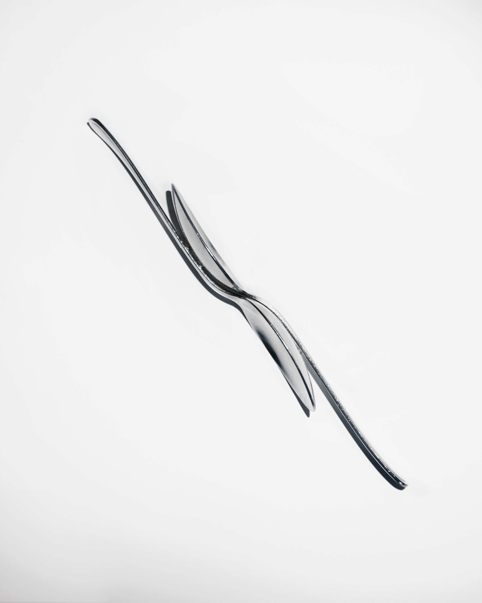
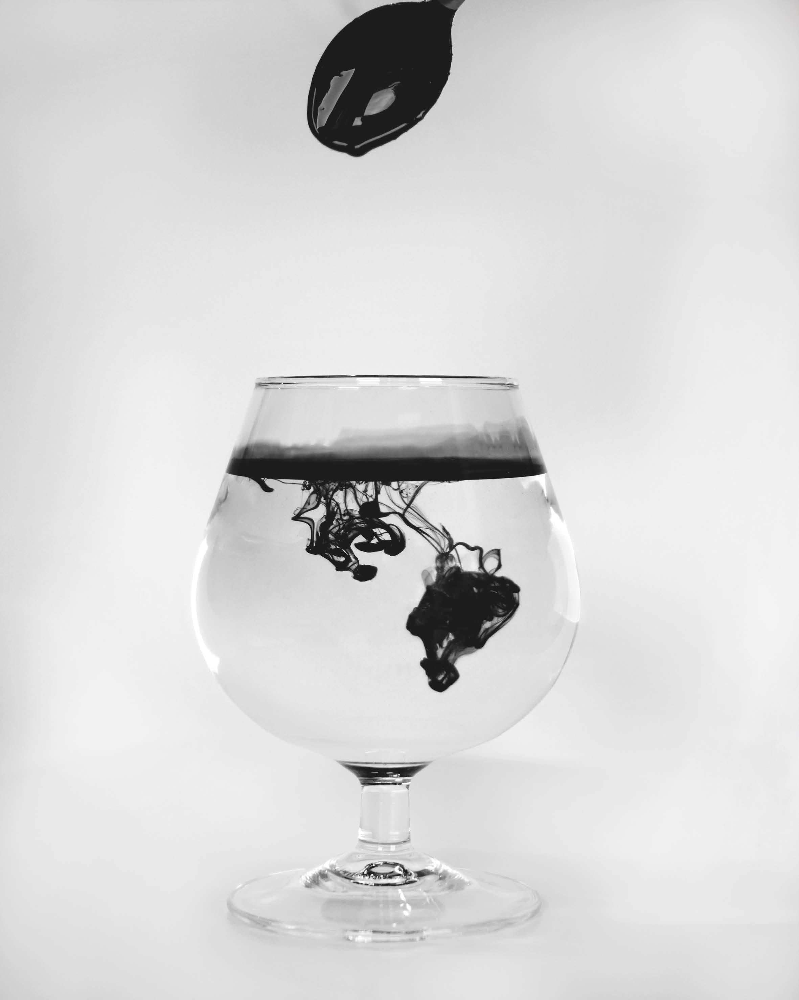
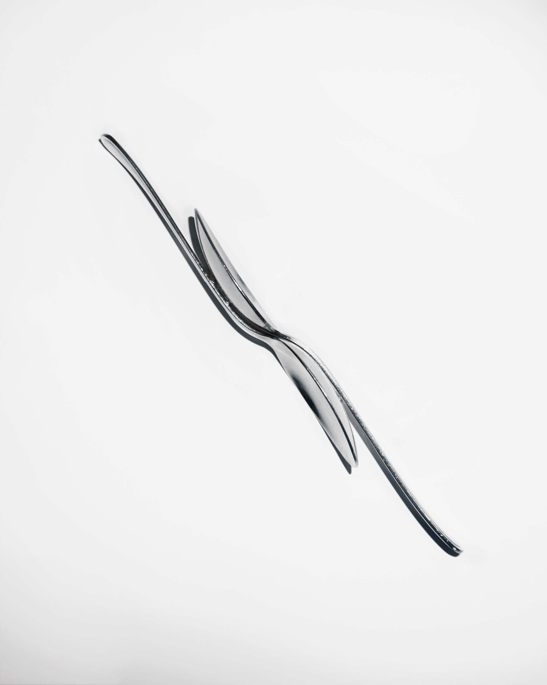
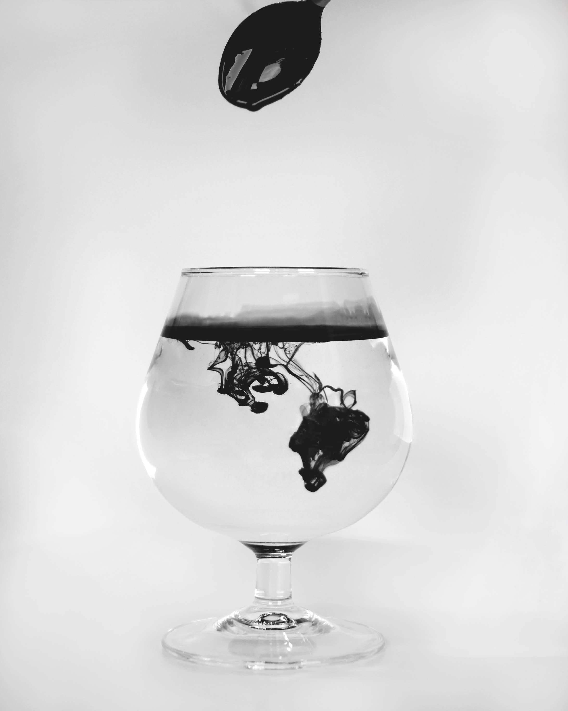

Voor een fictieve opdracht, opgesteld door Curio, heb ik voor het restaurant van MOMA abstracte fotografie toegepast om kunstwerken te creëren die als wanddecoratie in het restaurant gebruikt kunnen worden. Het museum staat bekend om zijn moderne kunst, en dit heb ik zoveel mogelijk laten terugkomen in mijn ontwerp. Ik heb ervoor gekozen om de huisstijlkleur van MOMA over te nemen en de foto’s in zwart-wit te maken, wat een chique en licht vervreemdend effect geeft. Op de foto’s zijn bestek en servies weergegeven, zodat er een duidelijke link ontstaat met het restaurant.
 


